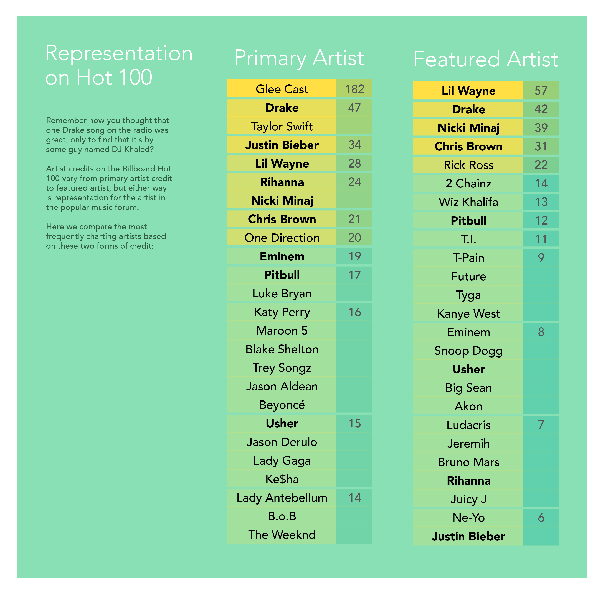

Collaboration +
Cross Genre Freedom
Artist collaborations are a frequent sight on the charts, especially with the expanded popularity of electronic music and crossovers embraced by today's listeners. The credits on a song still varies depending on the artist, but more than ever, we find inclusions of background vocalists, rappers, producers, and sampled artists on the charts.

Influential Factors on these Statistics include:
Genres
Many of the artists with the highest number of featured appearances are rappers. The hip-hop culture has a long history of collaborative work and sampling the works of other artists. Another note is that artists from other genres can more easily add a rap verse to their original works as a means to diversify their sound or remix a track for rerelease.
Ease of Collaborative Work
Technology has made it possible for artists to have a high level of collaboration with each other without having to align their busy schedules to all be physically present. Portions of songs can often be recorded by multiple artists coming into the studio at their own time or recording at a studio that is near, then the producers can select the files they want and combine them to a single track. All the involved artists can continue finessing their project through emails, video chats, and other forms of communication that bridge any geographical distance between them.
Sheer Quantity of Work
The artists on both lists have released a large amount of work over the decade. After every episode of Glee, the soundtrack releases with covers of popular songs that quickly chart on the Hot 100. The show spanned six seasons and over 728 musical performances. Second to this anomaly, Drake has released two albums, two mixtapes, and multiple diss tracks in the past five years. There's something to be said about keeping the momentum going and shooting for quantity in both of these examples.